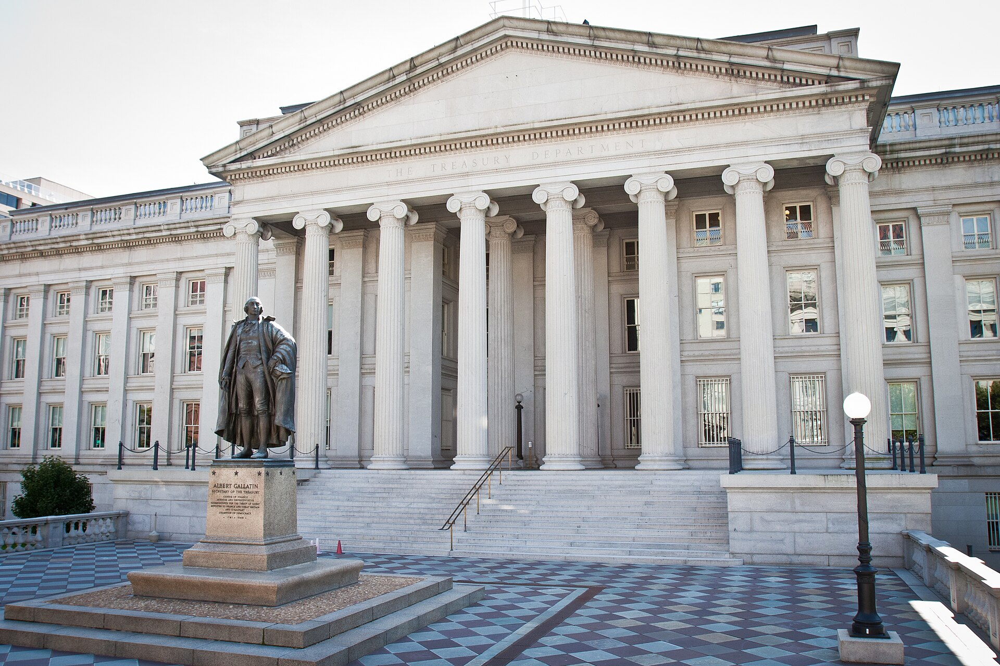
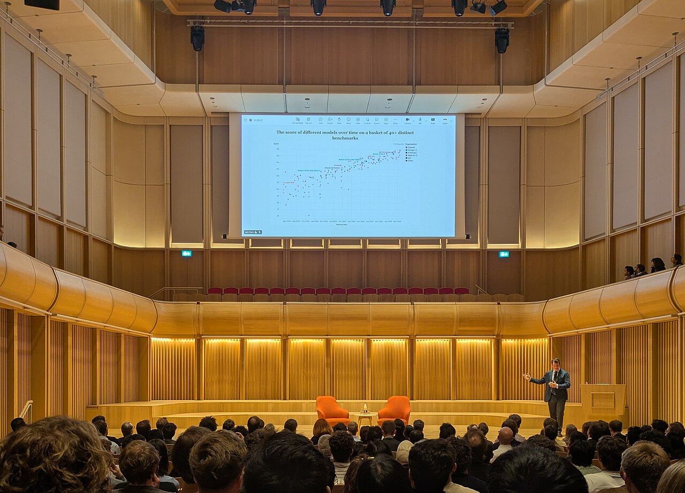
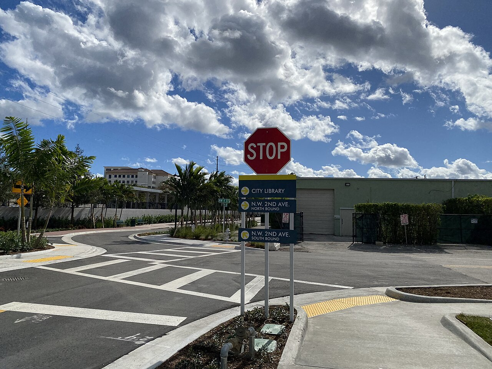

Vol. I · No. 121 · Thursday, September 24, 2026 · 22 items · ~21 min read
The ten-year broke five percent, SoftBank printed the largest junk bond on record, and Hollywood went to Congress.
Markets & Deals · Washington
The ten-year goes through 5 percent for the first time since 2007, and the five-year tails 3.1 basis points

The Treasury Building in Washington, which sold $70 billion of five-year notes on Wednesday. — Wikimedia Commons
Treasury sold $70 billion of five-year notes on Wednesday at a high yield of 5.033 percent, three and a tenth basis points above where the market said it should clear. That gap is the , and it was the wrong direction in every component. Bid-to-cover came in at 2.21 against a 2.33 average. took 54.3 percent against a 65.2 percent average, directs took 29.9 percent against 21.8 percent, and primary dealers were left holding 15.8 percent against a 12.9 percent average. BMO measured the 5.033 percent stop against a six-auction average of 4.186 percent, which is about eighty-five basis points of repricing in six auctions.
“A poor auction with Treasury trying to sell paper into a weak market and where yields weren’t attractive enough to bring in the buyers. The bond bear market continues on.”
— Peter Boockvar, One Point BFG Wealth Partners, September 23
The secondary market took it from there. The ten-year note rose more than thirteen basis points to 5.104 percent, its highest since July 2007 and its largest one-day move since April 7, 2025. The two-year closed at 4.889 percent, highest since May 2024, and the thirty-year at 5.398 percent, highest since June 2007. The curve bear-steepened: twos to tens at roughly 21.5 basis points, tens to thirties at 29.4. Odds of a quarter-point hike in October rose to 66.4 percent on CME FedWatch from 55.0 percent a day earlier, against under ten percent a month ago. Governor said the same day that “in my base case, further policy adjustments are likely to be needed to ensure inflation comes down to target in a timely fashion.”
The data underneath was strong and inflationary at once. S&P Global’s flash September services PMI jumped to 58.7 from 56.5, a near five-year high, with manufacturing at 56.7. “US business continues to boom,” Chris Williamson of S&P Global Market Intelligence said, adding that “input costs have meanwhile jumped in September at the steepest rate for four years, with fuel and transport costs spiking higher thanks to the rise in oil prices.” Brent settled up 3.86 percent at $103.08. Tony Miano at Wells Fargo Investment Institute put the repricing plainly: “A week ago you could argue that was a one-and-done insurance move or a one and maybe December hike. Today’s price action says investors no longer believe that.”
Markets & Deals · Tokyo
SoftBank sells the largest junk bond on record, $11.1 billion at up to 9.75 percent, to pay OpenAI
SoftBank Group raised $11.1 billion across dollar and euro on Thursday morning in Tokyo, the largest corporate bond sale ever done. The dollar tranches were $1 billion of three-and-a-half-year notes at 8.625 percent, $4.5 billion of five-and-a-half-year notes at 9.25 percent, and $4.5 billion of seven-and-a-half-year notes at 9.75 percent. In euros, €500 million of four-year paper at 7.125 percent and €500 million of six-year at 8.0 percent. The dollar passed $30 billion, roughly three times the dollar portion.
The proceeds fund the $10 billion third and final tranche of SoftBank’s $30 billion follow-on investment in OpenAI, with the remainder to general corporate purposes, and take ’s total commitment to the company to about $65 billion. Settlement is expected October 1. These are the highest yields SoftBank has ever paid on dollar bonds, and it paid them on a day when the American curve printed two-decade highs. The shares rose more than seven percent on the news.
The World · Washington · cross-spectrum LLLCR
Washington and Beijing push the trade truce to January 10, hours before Xi arrives at the White House
Treasury Secretary Scott Bessent said on Wednesday that the two governments had agreed to extend by two months the truce set to expire November 10, moving the cliff to January 10. The underlying deal is the struck in the South Korean port city in May. Bessent met Vice Premier for about ninety minutes at World Bank headquarters, his second meeting with him in four days after twelve hours of talks in New York on Sunday alongside trade representative Jamieson Greer. “We met today to see if we could do a bigger deal as opposed to just a series of smaller things,” Bessent said.
His compliance scorecard was mixed. China is meeting its commitment to buy 25 million tons of soybeans but lagging on a pledge to buy $17 billion of other agricultural goods, and American officials said last week that deliveries are behind as well. Thursday’s summit could produce announcements on removing tariffs from $30 billion of non-critical goods, plus financial services and farm purchases. Xi landed at on Wednesday for his first state visit to Washington in eleven years, and Trump met him at the airport.
Artificial Intelligence
A lab says its agents found something, two senators would make finding it a felony, and two firms started selling the work.
AI · San Francisco
Anthropic says 950 Claude agents found a new enzyme system in 21 hours of searching

Anthropic, whose life sciences group and wet laboratory were formed in the spring. — Wikimedia Commons
Anthropic said on Wednesday that Claude had identified a previously uncharacterised enzyme system it is calling array-associated , or ART, in . The system pairs a reverse transcriptase with a partner gene and a DNA repeat array, an architecture that rhymes with CRISPR. The search ran about 950 agents for 21 hours and consumed roughly 210 million tokens, narrowing more than 200,000 reverse transcriptases pulled from sequence databases to about 3,500 candidate systems and then to the twenty most promising.
Human scientists did all the physical laboratory work, and the biochemical and structural characterisation, in a wet lab the company stood up in the Bay Area in the spring; the lab handles BSL-1 and BSL-2 work only. Claude’s role was database search, candidate identification and pattern detection, with humans reviewing its candidate reports. Feng Zhang of MIT and the Broad Institute called it “an exciting example of how AI agents can contribute to biological discovery.” Dario Amodei went further: “Eventually it may even be possible for Claude itself to safely perform experiments by autonomously controlling lab equipment, with appropriate safeguards in place, but we aren’t doing that today.” The work is a , and TechCrunch noted that Stanford researchers have described a system similar in some respects. ART’s biological function is unknown.
AI · Capitol Hill
Sanders and Casar would make building superintelligence a twenty-year felony
Representative Greg Casar of Texas and Senator Bernie Sanders of Vermont introduced the Ban Artificial Superintelligence Act on Wednesday. It defines superintelligence as a system that either exceeds human cognitive performance across most domains or holds the capability to destroy or disempower humanity, including overthrowing the federal government, and it prohibits any person or entity from developing or deploying one. It also imposes an immediate pause on advanced development until a new , headed by a Secretary of Artificial Intelligence, writes safety rules and completes model review.
The penalties are the point. Individuals face up to twenty years, which the sponsors compare to unlawful nuclear weapons development, and companies face a , meaning dissolution. The agency would monitor frontier systems across their lifecycle, supervise removal of dangerous capabilities including shutdown subversion and unauthorised cyberattacks, and supervise the destruction of any superintelligence. “Experts are warning that AI superintelligence… could kill countless numbers of people,” Casar said. Sanders framed it outward: “When the future of humanity is at stake, we need , not voluntary standards.” Fox Business reported that employees at AI companies are backing the bill. The bill number, cosponsors and committee referrals were not in the announcement.
AI · San Francisco and London
Two AI-native law firms launched on the same day, one selling a patent at $9,000 with a refund guarantee
Fearn, a patent prosecution firm for startups, launched on Wednesday with a $5.5 million raise led by Kindred Ventures alongside , Designer Fund and Essence VC. It is run by Han Kim, formerly of , and Angela Gao. The pricing is $2,500 for a and $9,000 for a non-provisional filing, with the full fee refunded if the patent office refuses protection. The firm’s comparison is a conventional application at thirty to forty attorney hours and $18,000 to $40,000. “I was surprised to see how much of the work in patents was mechanical,” Kim said.
The same day, The Global Legal Post reported the launch of Vetta, a London firm founded by Nic Vetta, who spent two years as a corporate lawyer at Latham & Watkins including a six-month secondment to Carlyle. Vetta targets commercial contracts for private-equity-backed portfolio companies and staffs lawyers alongside engineers. “Private equity-backed companies are expected to move quickly,” he said. “They win customers, hire, procure and acquire, and each of those activities produces contracts.” Neither firm disclosed headcount; Vetta disclosed no funding or fee schedule.
Markets & Deals
Two South Florida balance sheets, a twelve-year hold coming to market, and a coupon of zero.
Markets & Deals · Miami · South Florida
Brightline moves toward Chapter 11 on $1.1 billion while the trains keep running

Brightline’s Boca Raton station. Service at all six stops is expected to continue through a filing. — Wikimedia Commons
Brightline, the Miami-based higher-speed rail line, is close to filing a Chapter 11 petition to restructure an estimated $1.1 billion of corporate debt, Bloomberg reported and the South Florida Sun Sentinel carried on Wednesday. Total debt is $5.5 billion; the $1.1 billion is the corporate-level tranche. A filing would not disrupt daily operations at Miami, Aventura, Fort Lauderdale, Boca Raton, West Palm Beach or Orlando. The company reached an agreement last month with for at least $350 million of new loans. Asked on Wednesday, Brightline said it had no information about a timeline.
The July 2026 financial report had already said it plainly. “Brightline continues to need additional liquidity to address operating requirements, as well as upcoming debt service payments,” it reads, disclosing months of creditor discussions over “the potential incurrence of additional debt, debt amendments, refinancing transactions, and other strategic transactions.” The constraint is written into the existing paper: “the terms and conditions of our existing indebtedness include restrictive covenants that limit our ability to incur debt and we expect that we will need to obtain consent from certain holders of certain of our and our indirect parent entities’ debt.” The language followed. Brightline had earlier sought $100 million from lenders and put a Fort Lauderdale garage up for sale.
Markets & Deals · Miami and Montego Bay · South Florida
Royal Caribbean pays $3 billion for half of Sandals, with Morgan Stanley on both sides of it
Royal Caribbean Group agreed on Wednesday to buy a 50 percent equity interest in Sandals and Beaches Resorts for approximately $3 billion, a of roughly ten times. The release was datelined Montego Bay and Miami, and the signing took place at Royal Caribbean’s new Miami headquarters. Morgan Stanley provided for the investment and is also financial adviser to the buyer, alongside Perella Weinberg, with Kirkland & Ellis on the legal side. Sandals was advised by BofA Securities and , with Latham & Watkins and Jones Day as counsel.
Closing is expected in early 2027 and the deal is expected to be accretive next year. The joint venture will be governed by a board under the shared leadership of Adam Stewart and Jason Liberty, with Stewart staying on as executive chairman. “The Stewart family has created powerful and beloved brands, and we are honored to build on that legacy,” Liberty said. Stewart invoked his father: “founded Sandals Resorts with the belief that a company built in the Caribbean could stand on the world stage alongside the most respected names in hospitality.” Royal Caribbean runs 71 ships and enters river cruising in 2027.
Markets & Deals · Chicago
Hellman and Friedman tests the software bid with a $10 billion process for Applied Systems
Reuters reported on Wednesday evening that is exploring a sale of Applied Systems at a valuation of up to $10 billion, working with JPMorgan and Goldman Sachs on a process that has already drawn prospective-buyer interest. Applied generates more than $550 million of annual EBITDA, per one of Reuters’ sources, which puts the top of the range near eighteen times. The firm bought the company from Bain Capital in early 2014 at about $1.8 billion, so a $10 billion exit is roughly five and a half times the headline enterprise value on a twelve-year hold, before any leverage effect. All four parties declined to comment.
Applied sells software to insurance agencies and brokerages, naming HUB International, Insurance Office of America and the Baldwin Group among its customers. Reuters frames the process as one of the year’s largest tests of appetite for mature software assets, against comparables including ServiceNow’s $7.7 billion purchase of Armis and Hg’s $6.4 billion take-private of OneStream. It follows a fortnight of sell-side activity: Thoma Bravo on Foundation Software, Vista on Finastra, and Waystar weighing options. Two bulge-bracket banks on one mandate is often the tell of a .
Markets & Deals · New York
Voyager sold six-year money at a zero coupon on the day the long bond hit 5.4 percent
Voyager Technologies priced $350 million of zero percent convertible senior notes due October 2032 on Wednesday night, in a placement to qualified institutional buyers. The notes bear no regular interest and the principal does not accrete. Initial conversion is 24.4978 shares per $1,000, a conversion price of about $40.82, a thirty percent premium to the $31.40 close. The initial purchasers hold a thirteen-day option for a further $52.5 million. Net proceeds are about $340.4 million, of which roughly $45.7 million funds the , with a cap price of $78.50, a 150 percent premium.
That hedge costs about 13.1 cents of every gross proceeds dollar. The rest is for general corporate purposes and what the company describes as expansion through organic growth and strategic acquisitions. Settlement is September 28. The notes are callable for cash from October 21, 2030 if the stock holds above 130 percent of the conversion price, with a clean-up call below ten percent outstanding, and holders may put at par on a fundamental change. Voyager is a Denver defence and space technology company with a $1.92 billion market capitalisation and a 52.79 million share float, and it went from announcement to pricing in a day.
Law & the Courts
A Trump appointee reopens the White House grounds, and a state pension fund goes looking for a newspaper’s minutes.
Law · Washington
Judge Kelly orders the White House to let CNN, MS NOW and Politico back on the grounds
The E. Barrett Prettyman Courthouse, where Judge Kelly heard argument on Wednesday. — Wikimedia Commons
Judge granted a shortly after midnight on Thursday requiring the White House to restore grounds access for CNN, MS NOW and Politico. He had heard argument on Wednesday and ended without ruling from the bench. “This is a high bar, but Plaintiffs have met it,” he wrote of likelihood of success and irreparable harm. The order runs fourteen days. President Trump announced the ban on September 18, and journalists from the three outlets were turned away beginning the following day; the outlets pleaded , calling the ban a blatant First Amendment violation.
At the hearing Kelly pressed whether the administration had given the outlets adequate process before revoking access. Justice Department attorney Michael Velchik argued that the two controlling press-access rulings “were wrong.” Kelly answered that his decision would be guided by prior rulings in comparable First Amendment cases even where the government disagrees with them. Those rulings, one of which reached the Supreme Court, establish that a journalist is entitled to be heard before a pass is pulled, the rule that runs from . Kelly was nominated by Trump in 2017 and in 2018 ordered a CNN journalist’s access restored in a materially similar case. The docket number was not reported.
Law · Doral and New York · South Florida
Florida’s pension fund sues the New York Times for its board minutes
The and the National Center for Public Policy Research filed a shareholder inspection petition against The New York Times Company on Wednesday in New York County. It seeks no damages and asserts no claims against directors. Attorney General James Uthmeier filed as an SBA trustee and announced it from Doral, flanked by Miami-Dade Sheriff’s Office Chief Rita Rodriguez and South Florida PBA president Steadman Stahl. The Florida Retirement System holds roughly 160,000 Times shares and manages about $235.7 billion for more than 1.2 million members.
The demand was served August 10 and denied in full on August 21 as “pretextual,” narrowed voluntarily on August 26 to board-level governance records from 2020 forward, and refused again at a September 1 conference. The narrowed version expressly excludes reporter notes, drafts, source identities and editorial deliberations, which is the architecture of the argument. “The company itself tells investors that a perception of unreliable or biased journalism is a material risk to its most valuable asset,” Uthmeier said. “The company refused to produce a single page.” Times spokesman Charlie Stadtlander called it “a transparent attempt to exert agenda-driven pressure against an independent media organization… We will defend against the suit vigorously.” The is the co-petitioner; the index number was not reported.
Law · Supreme Court of the United States
Missouri’s map reaches the Supreme Court a third time with absentee ballots already out
People Not Politicians and its executive director Richard von Glahn filed a 39-page emergency application on Tuesday night, docketed as No. 26A388, asking the justices either to stay the Eighth Circuit’s September 21 decision or to clarify that the Court’s own September 10 stay remains in effect. told the Court its orders “are not invitations for a lower court to repackage the same relief and try again.” Justice Kavanaugh, the circuit justice, ordered responses by two o’clock on Wednesday. Missouri’s Solicitor General Louis Capozzi warned that a stay means “voter and candidate confusion will persist, Missouri will endure a fifth court-ordered change to its map in September, hundreds of thousands of voters in the Primary Election will be disenfranchised.”
The Eighth Circuit’s unsigned 35-page opinion held that using the 2022 map in November violates Article I, Section 2, reasoning that voters denied the chance to vote for the nominees appearing on their own general-election ballot are deprived of a constitutional right of choice, and that supports rather than prevents that result. It stayed its own mandate until five o’clock Central on September 28. Counsel for the individual plaintiffs, Cole Bradbury, argued separately that People Not Politicians lacks standing under . The challengers note that Tuesday was the absentee printing deadline, that military and overseas ballots have gone out, and that von Glahn voted that day under the 2022 map.
Law · New York
Paul Weiss takes Weil’s private equity co-head and five more, as the year’s exits pass twenty-five
Paul Weiss announced six additions to its private equity practice on Tuesday without saying where they came from. All six were Weil partners: private equity co-head Christopher Machera, M&A partner Timothy Burns, tax partner Noah Beck, executive compensation partner Amanda Rotkel, and Andrew Lawson and Dylan Hans across tax and private equity M&A. Chairman called them “one of the most talented teams of private equity lawyers in the marketplace.” Machera said the response from clients “since I arrived” had been “literally overwhelming.”
Above the Law counts more than twenty-five partners out of in 2026 with the year unfinished: three London finance partners and, later, David Avery-Gee and Sarah Flaherty to Sullivan & Cromwell; a London restructuring trio to Akin; Murray Cox and four private funds partners to Simpson Thacher; white-collar co-chair Daniel Stein to Freshfields; Sachin Kohli to Wilson Sonsini; and corporate chair Michael Aiello to Cravath with five others, a departure Weil’s own announcement noted was to “a smaller platform.” Weil has been hiring back, from Dechert, Kirkland, Simpson Thacher and Freshfields, and says it is not in merger discussions with anyone.
The World
A podium answer to Tuesday’s ultimatum, an invitation to Miami, and a winter both sides now say will hurt.
The World · United Nations, New York · cross-spectrum LLLCR
Pezeshkian tells the General Assembly Iran will not bow, and Washington opens sanctions on any airport that takes its flights
Masoud Pezeshkian, who addressed the General Assembly a day after Trump’s ultimatum. — Wikimedia Commons
Iran’s president took the rostrum on Wednesday, a day after Trump told the same hall he might annihilate the Islamic Republic. “It cannot be the case that everyone benefits from the while we are denied access to shipping through this waterway,” Masoud Pezeshkian said. “The Iranian people will not bow to pressure.” He held up images of the late supreme leader and of more than 150 schoolchildren killed in the war’s opening days, and said: “Yes, they did hit us, but we did not bend the knee.” The lone American diplomat in the hall walked out.
The operative news was administrative. Washington said it will impose on any country that allows Iranian flights after Wednesday. Mohsen Rezaei, secretary of the , told state television Iran would make neighbouring airports unusable in return. Foreign Ministry spokesman Esmail Baghaei said Tuesday’s two-hour exchange through a Qatari mediator conveyed three conditions: an end to the war on all fronts, a halt to American strikes, and release of frozen assets. He called the contacts “not anything new.” reported a cargo ship hit by an unknown projectile in the strait, two casualties, the vessel on fire and adrift. Reuters had oil up almost two percent in choppy trade; Fox News had WTI settling 44 cents lower at $90.08.
The World · New York and Miami · South Florida · cross-spectrum LLLCLR
Rubio says the United States has invited Putin to the G20 at Trump’s Doral club
Secretary of State Marco Rubio announced the invitation on Wednesday at a press conference on the General Assembly sidelines, after meeting Foreign Minister Sergei Lavrov. “We’ve invited President Putin to the ,” he said. “We think it’s an opportunity for him to engage not just with [Trump] but with other world leaders. We hope that’s an invitation he’ll accept.” The December summit is set for in Miami. Dmitry Peskov said Moscow is “grateful and appreciative” and will decide through diplomatic channels. Putin has not attended a G20 since 2019 and has not been in the lower forty-eight since before the 2022 invasion.
Rubio said Trump will meet “virtually anyone” because “in order to solve problems, you have to meet with people you disagree with,” and that he had raised European accusations of Russian hybrid attacks with Lavrov, warning the war “could metastasize and spread into other places.” The timing is the story: Congress passed a sanctions bill the prior week authorising 100 percent on the largest buyers of Russian energy. The House Foreign Affairs Committee posted that Trump had signed the bill five days earlier and that Rubio had now made clear “the administration has no intention of isolating Russia.” European officials refused to join the family photo with finance minister in August. Zelensky has said he will attend and meet Putin there.
The World · United Nations, New York · cross-spectrum LLLCR
Zelensky promises Russia a painful winter as Lavrov rules out any pause
“Ukrainians understand that this winter could be very harsh for us,” Volodymyr Zelensky told the General Assembly on Wednesday. “But in response, we will have no choice but to make it painful for Russia too.” He called Putin “patient zero” repeatedly and said de-escalation steps are needed before winter. At a meeting on the sidelines he said Ukraine is ready for a Black Sea maritime truce built on proposals from Egypt, India and Turkey: “We are waiting for Russia’s response… We have to start somewhere.”
Moscow gave none. A foreign ministry statement after met Rubio reaffirmed Russia’s “unconditional commitment to achieving the objectives of its .” To the Security Council, Lavrov said Europe “just wants to get a pause, and it wants to use it to pump the Kyiv regime with weapons.” Rubio said afterward that both sides had voiced interest in a limited ceasefire covering grain and energy targets, though Le Monde reported Zelensky also ruled out an energy-strike moratorium, defending Ukrainian strikes as necessary “not to die.” Kyiv spent a second day under jet-powered ; casualty counts moved through the day, from one dead and eight injured in The Guardian’s morning account to eight across Ukraine in a later Reuters tally.
The World · New York · cross-spectrum LC
Trump’s Board of Peace asks donors for $2.45 billion and says there is no plan B
The unveiled a six-month, $2.45 billion Gaza recovery plan at a board meeting on the General Assembly sidelines on Wednesday, with Axios obtaining the document. It runs 66 projects across infrastructure, human development, economic acceleration, digital transformation, legal affairs, and peace and security, and it estimates physical damage at $35.2 billion and full reconstruction at about $71.4 billion over a decade. Infrastructure is the largest share at roughly $1 billion: $400 million for temporary shelters, $275 million for rubble and , $50 million for hospitals, $30 million for roads.
Security runs about $885 million, including $275 million for a permanent hardened site in Rafah for 5,000 personnel, $140 million to recruit and deploy a multinational contingent, $120 million for Palestinian police, and $20 million for a weapons buy-back. Thousands of Gazans have been vetted for that police force but Israel has blocked them from leaving to train in Egypt. None of the $2.45 billion is raised. , the high representative, said the discussion with Israel “is not easy” because of the October 27 election. Steve Witkoff was blunter: “There are no shortcuts. No Plan B.”
Entertainment & EASL
A federal production credit, an antitrust exemption, and a bidder who walked but kept the stake.
Culture · Capitol Hill
A federal film and television credit lands in the House today, stackable on top of the states
The Capitol, where a bipartisan production incentive is expected to be introduced on Thursday. — Wikimedia Commons
Deadline’s Ted Johnson reported on Wednesday that lawmakers in both parties are expected to introduce legislation establishing a federal film and television incentive as soon as Thursday, and The Ankler ran the same scoop. The named House backers are Laura Friedman, Democrat of California, and Brian Jack, Republican of Georgia, with support expected from members of ; Adam Schiff and Tim Scott are the Senate names. The base credit is expected at twenty percent, with another five to ten depending on factors including whether the production sits in a disaster or economic zone or is independent.
Schiff has described the mechanism directly: “this would be stackable with tax credits offered by the state of California, for example. So, a production would enjoy the federal incentive as well as the state incentive. That makes us truly competitive with other countries.” His distributional case is about crews, not stars: “These Hollywood stars are going to get paid wherever it’s filmed… What it does matter to is a lot of the set designers, and the caterers, and the local dry cleaners.” The Motion Picture Association hosted a call last week with industry and labour figures and Jon Voight, Trump’s ambassador to Hollywood, and Trump endorsed a federal incentive in August as a way to reverse . The Wall Street Journal editorial board has already called it a handout. With both chambers heading into recess, the earliest passage is the lame-duck session after the midterms.
Culture · Washington
The Senate cleared the college sports bill 77 to 22, and Murphy’s former aide says Democrats blew it
Sportico’s Daniel Libit published a two-hour interview on Thursday with Peter Mills, who ran college sports in Senator Chris Murphy’s office from 2018 to 2025. The Senate voted 77 to 22 last week to advance the Protect College Sports Act, after invoking 74 to 24 two days earlier with a majority of the Democratic caucus voting yes. Murphy was among the opponents. Another procedural hurdle cleared this week. The bill, co-authored by Maria Cantwell and Ted Cruz, would give the NCAA while codifying and extending a cap on institutional compensation for athletes.
“They gave an antitrust exemption to one of the worst antitrust violators,” Mills said, arguing the cap would make it harder, if not impossible, for athletes to organise. “I knew they were going to find 10 Democrats who don’t care on this issue,” he added. “The number of [Senate] Democrats who have voted for that bill, I think they are going to regret it.” His thesis is that a 2020 rupture among Murphy, Cory Booker and Richard Blumenthal over the College Athletes Bill of Rights cost Democrats a cohesive position. disputed the characterisation by email: a bill asserting athletes are employees “didn’t have a realistic chance of passing the Senate… and it likely holds true to this day.” Women’s basketball players at Oregon State are organising now. Spokespeople for Murphy, Blumenthal and Booker declined or did not respond.
Corporate · New York and Las Vegas
Barry Diller drops an $18 billion take-private of MGM Resorts and keeps the 27 percent
, the media company Barry Diller controls, withdrew its proposal on Wednesday night to buy all the public shares of MGM Resorts International. The bid, made in June, was $48.30 a share in cash and valued MGM above $18 billion; People owns about 27 percent, built from 2020 when the shares were battered by pandemic closures. MGM fell eight percent in extended trading. “We didn’t feel the mix was coming together in the way we had hoped and have decided not to pursue taking the company private at this time,” Diller said, adding that People remains open to a strategic transaction. MGM said its “board remains excited to continue to lead MGM Resorts as a standalone company.”
MGM owns properties accounting for roughly forty percent of the Las Vegas Strip and has leaned on Macau and digital while footfall has been sluggish. Reuters read the pursuit as an echo of Diller’s earlier travel bet on Expedia, which IAC bought in 2002 and later spun off. Two structural facts sit under any revival. The company already sold the real estate under most of its resorts in a series of , and any change of control needs prior approval.
Culture · Seattle
Undead Labs goes independent from Xbox and cuts staff in the same week
Game Developer reported on Wednesday that Undead Labs, the State of Decay studio, has completed its divestment from Microsoft and is now independent and employee-owned. The studio confirmed “significant” layoffs on LinkedIn without a number, some of them on State of Decay 3, writing that it is “difficult to reach this moment knowing that not everyone who helped get us” here will continue. Rock Paper Shotgun reported the cuts hit “a significant number” of “exceptionally talented developers.” The deal is structured like the earlier and Compulsion exits, with the studio keeping its IP, back catalogue and .
State of Decay 3 stays in development and is still planned for , with a new publisher not yet named. It follows Tuesday’s cuts of 268 across Halo Studios, Rare, Treyarch, World’s Edge, Activision and The Coalition, and the Gears of War: E-Day story director was laid off on Wednesday, four days after the game went gold. Analysts quoted by Kotaku called the restructuring a reverse acquisition in slow motion, three years after the $69 billion Activision Blizzard purchase. Headcount, severance and the ownership vehicle were not disclosed.
Compiled by Matthew Yellin · mattyellin.com · Est. May 2026 · A cross-spectrum brief drawn each morning from wires, filings, and the trade press